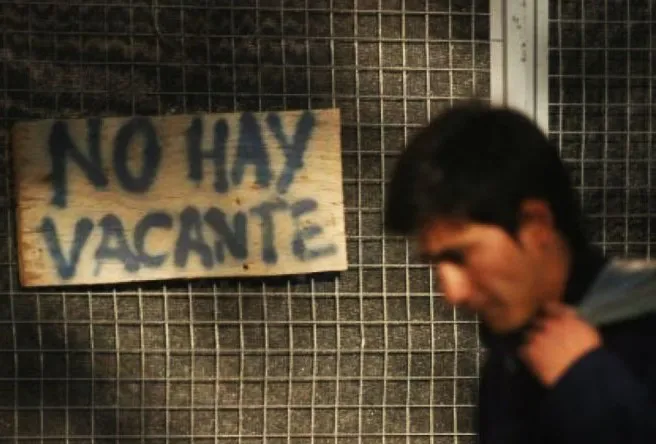

Agresiones a la prensa: el gesto intimidatorio de Santiago Caputo con un fotógrafo que lo retrató
El reportero gráfico del diario Tiempo, Antonio Becerra, fue agredido por el asesor presidencial en la previa del debate legislativo porteño. Caputo, molesto porque le tomaba fotos, se le acercó, tomó su credencial con sus datos personales y la fotografió.
